A set  is transitive if every element of an element of
is an element of . An ordinal is a transitive set
strictly well ordered by the membership relation
is transitive if every element of an element of
is an element of . An ordinal is a transitive set
strictly well ordered by the membership relation
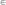
. One writes for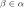
.
Let be an ordinal. Then every element of is an
ordinal, and
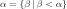
is the set of its own predecessors. If is an ordinal with
is an ordinal with
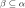
and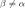
, then . Any two ordinals are comparable, and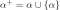
is the least ordinal greater than.
Let . It is transitive: if
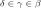
, then all three lie in by transitivity of , and the
order on is transitive, so 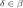
. It is well ordered by , being a subset of. Hence
is an ordinal, and the displayed identity for is the
definition of 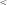
.If
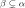
, then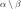
has a least element , and is an initial segment of
– for and
, and is an initial segment of
– for and 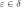
we get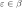
by transitivity of. By the description of
initial segments, 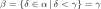
, so .Comparability:
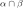
is transitive and well ordered, hence an ordinal, and it is a subset of both. If it were a proper subset of each it would belong to each, hence to , giving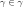
and contradicting strictness. So equals or , that is
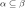
or , and the previous paragraph turns inclusion into membership or equality.Finally
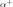
is transitive and well ordered by , with as its greatest element; any ordinal 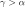
contains and hence contains or equals it.
Let  be a well-ordered set,
be a well-ordered set,  a set, and
a set, and  a map assigning
to every function
a map assigning
to every function  from an initial segment of into a
value
from an initial segment of into a
value
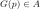
. Then there is exactly one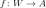
with for every .
.
Call an attempt if its domain is an initial segment of ,
its values lie in , and
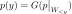
for every in its domain. Any two attempts agree on the intersection of their
domains: otherwise, that intersection being an initial segment, there is
a least at which and
in its domain. Any two attempts agree on the intersection of their
domains: otherwise, that intersection being an initial segment, there is
a least at which and  differ, and then
differ, and then
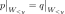
, so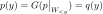
– a contradiction.The attempts form a set, being certain subsets of
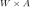
, so their union is a function, and it is an attempt. Its domain is all
of : by transfinite induction, if
is a function, and it is an attempt. Its domain is all
of : by transfinite induction, if  is contained in the
domain then
is contained in the
domain then 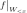
is an attempt and extending it by the value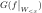
at is again an attempt, so
lies in the domain of the union. Uniqueness is the agreement of attempts
applied to two total solutions.
is again an attempt, so
lies in the domain of the union. Uniqueness is the agreement of attempts
applied to two total solutions.
Every well-ordered set is order-isomorphic to exactly one ordinal, by exactly one isomorphism.
Let be well ordered. Define on by recursion:
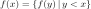
, the value being the image of the previously defined part. Each is an ordinal by induction on
: its elements are ordinals
is an ordinal by induction on
: its elements are ordinals 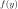
, it is transitive because is order preserving on , and it is well ordered since
is injective and order preserving there – 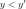
gives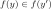
, and with would put in itself.
So is an order isomorphism of onto its image, which is a
transitive set of ordinals, hence an ordinal. Uniqueness: an order
isomorphism between ordinals is the identity, since a least point of
disagreement would have to be sent to the set of images of its
predecessors, that is to itself.
There is no set containing every ordinal.
Such a set would have as a subset the class of all ordinals, which is transitive and well ordered by , hence an ordinal
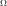
; then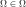
, contradicting the strictness of the order.The corollary is Burali-Forti's paradox, and in the modern axioms it is not a paradox but a theorem: the ordinals form a proper class. Its practical content is that a construction indexed by the ordinals must stop – if it produced a new element at every stage it would inject the ordinals into a set – which is the standard argument for closing off a transfinite process, Hartogs' theorem being the sharp form of it.